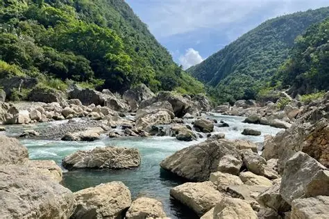
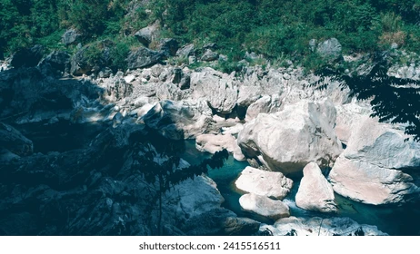
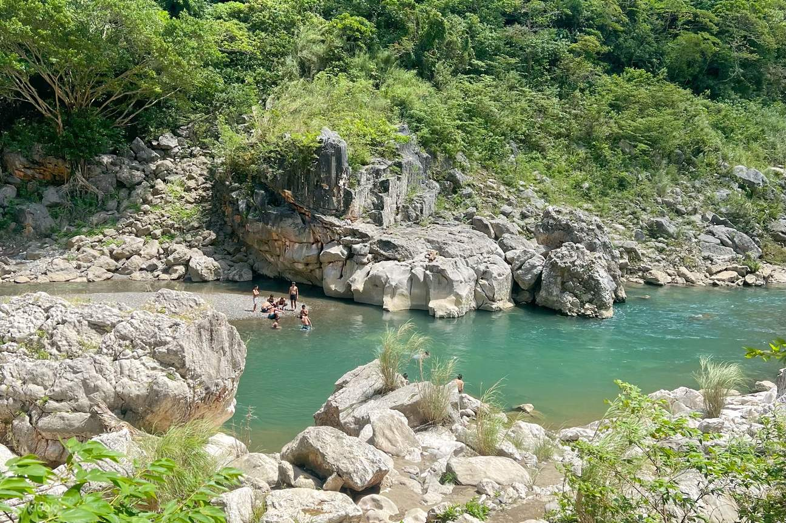
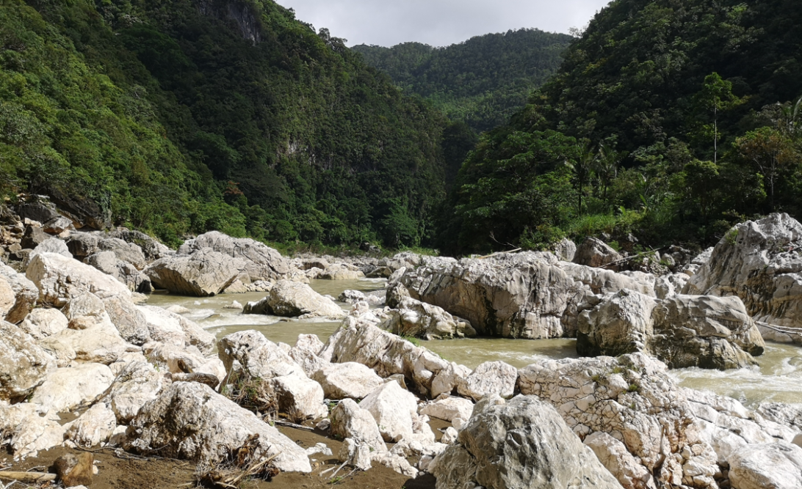

Location:
Brgy. Daraitan, Tanay, Rizal.
Best for: Adventure Seekers, Swimmers, and Cave Explorers
Vibe: Pristine, Wild, and Captivating.


Tinipak River
Discover the Whitest Rocks and Clearest Waters in Tanay.
Tinipak River is often cited as the cleanest inland body of water in the region. It is famous for its massive, smooth white marble rock formations that create a stunning contrast with the river's deep blue and emerald hues.
Brgy. Daraitan, Tanay, Rizal.


